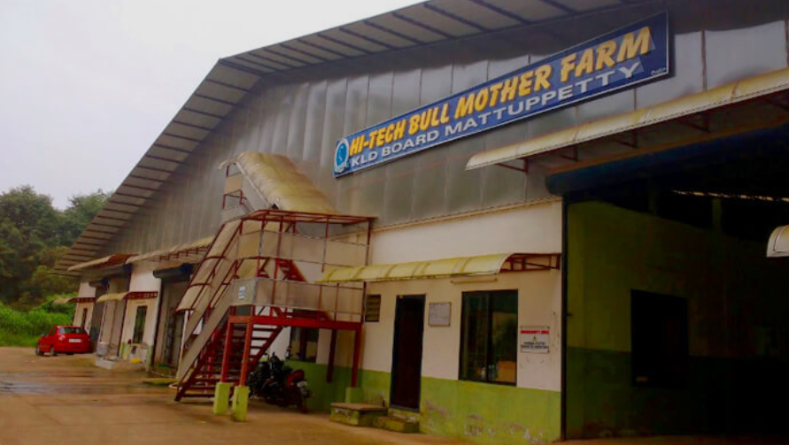
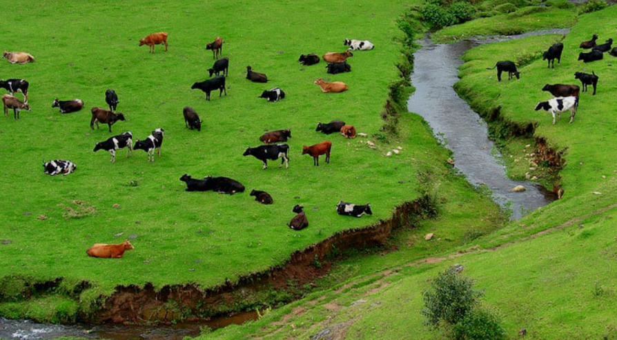
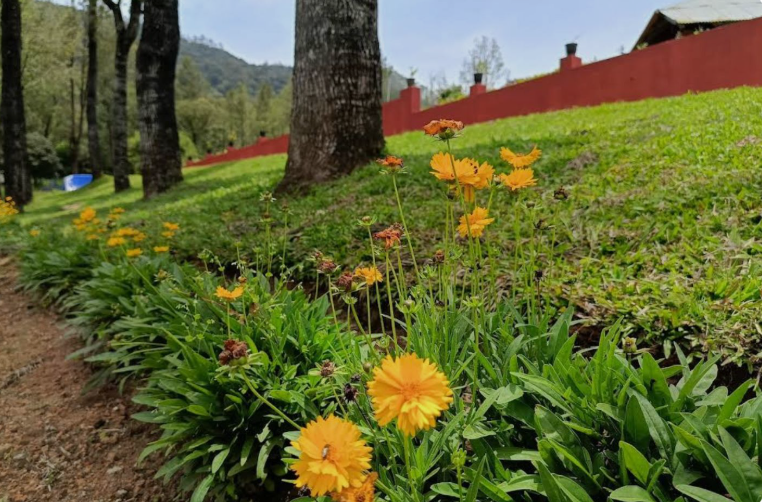

Swiss Dairy Farm is a well-known tourist attraction located near Munnar in Idukki district, Kerala. The farm is famous for its high-quality dairy cattle and modern dairy farming practices. Visitors can observe different breeds of cows, learn about milk production, and understand how dairy products are processed. The clean and green surroundings make the farm an educational and enjoyable destination.
The farm is surrounded by beautiful hills, tea plantations, and fresh mountain air, offering a peaceful environment for visitors. It is an ideal place for families, students, and nature lovers who wish to learn about dairy farming while enjoying the scenic beauty of Munnar. Swiss Dairy Farm provides a unique experience that combines agriculture, education, and tourism.



Indo-Swiss Dairy Farm is a famous government dairy farm located at Mattupetty near Munnar in Idukki District, Kerala. Established in 1963 under a joint project between the Government of India and the Swiss Confederation, the farm is one of India's leading livestock development and dairy research centres. It is surrounded by beautiful grasslands and scenic hills.
The Indo-Swiss Project was started in 1963 to improve dairy farming and develop high-quality cattle breeds suitable for Kerala's climate. Later, the project came under the Kerala Livestock Development Board (KLDB) and continues to play an important role in cattle breeding and dairy development. 0
The farm is home to nearly 400 high-quality cattle. Visitors can see dairy farming activities, lush grazing fields, cattle breeding programmes and beautiful mountain scenery. Fresh dairy products such as milk, cheese and chocolates are also available. 1
The farm is surrounded by green grasslands, tea plantations and rolling hills. The cool climate and peaceful atmosphere make it an attractive destination for visitors and nature lovers.
Today, the Indo-Swiss Dairy Farm is one of Kerala's leading livestock development centres. It contributes to cattle breeding, dairy research and tourism, while attracting visitors interested in agriculture and animal husbandry. 2